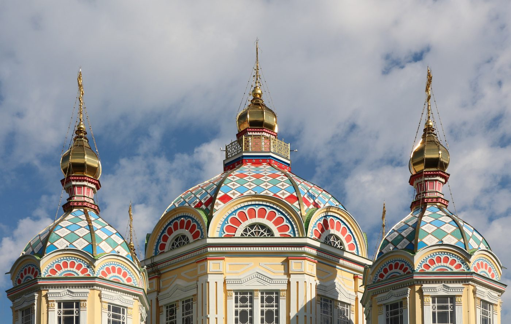
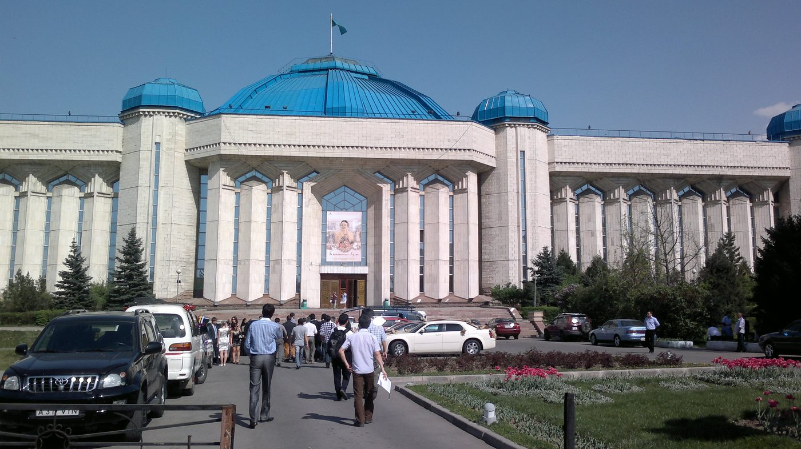
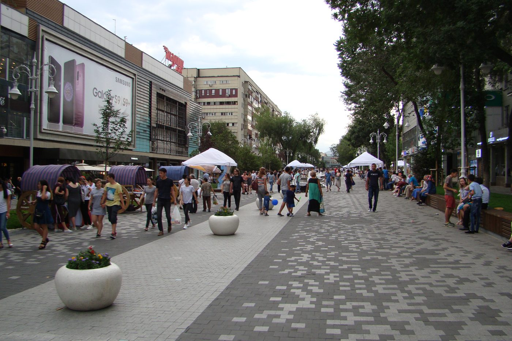
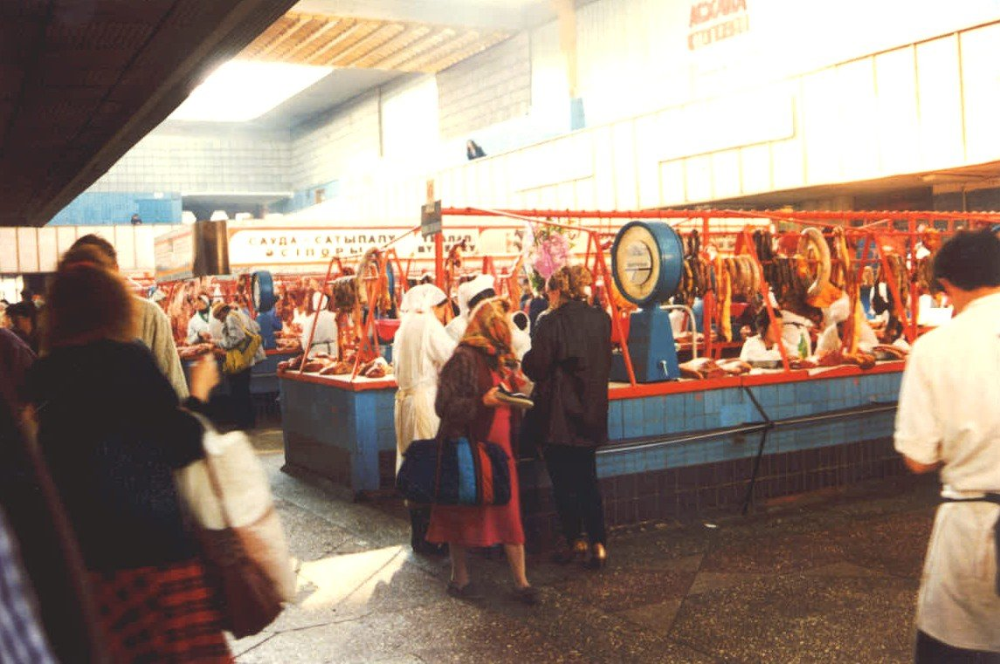
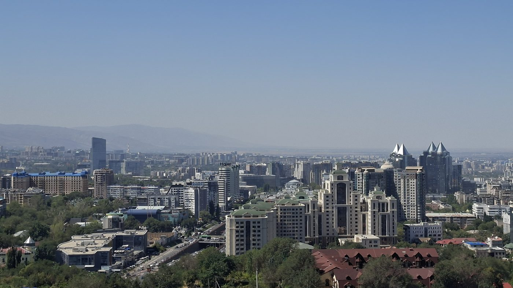
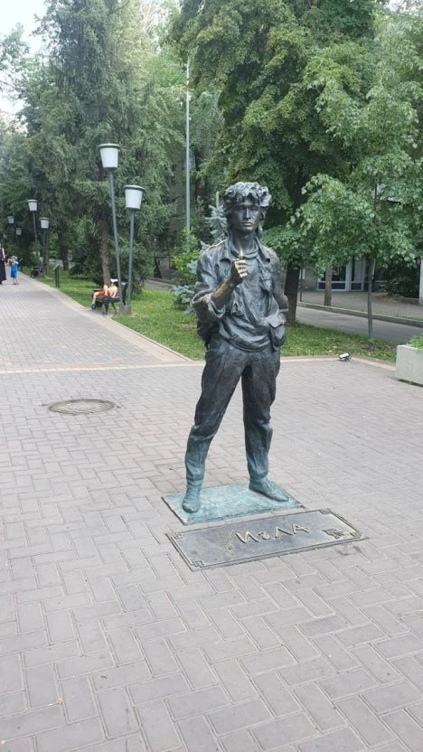
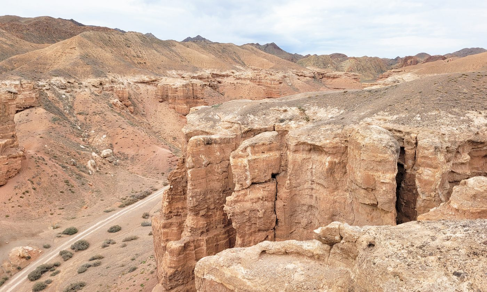
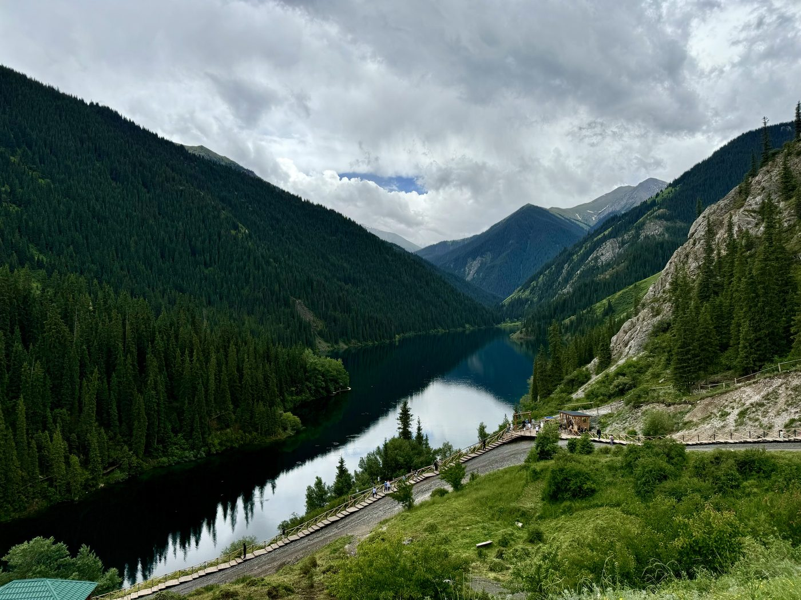
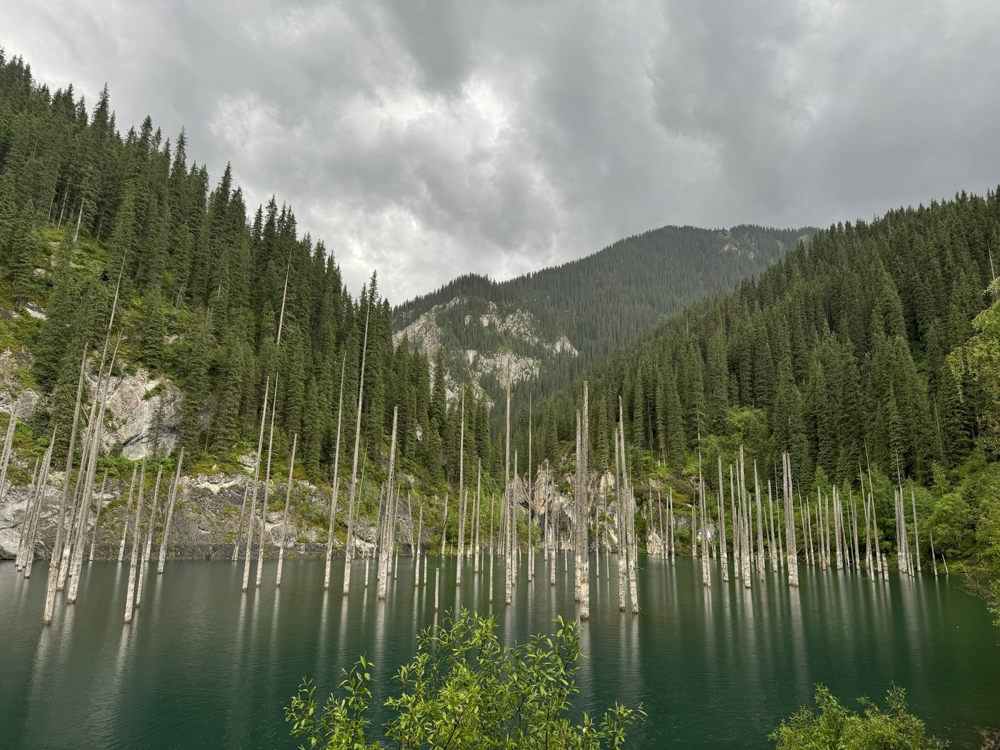

평화기행
| No | 영문 이름 | 한글 이름 | 항공권 번호 | 예약번호 | 가는편 날짜 | 가는편 시간 | 오는편 날짜 | 오는편 시간 | 좌석등급 |
|---|---|---|---|---|---|---|---|---|---|
| 1 | KIM/SUNGKUK MR | 김성국 | 9885030155389 | F3IUQB | 09.27(일) | ICN 18:10 → ALA 20:50 | 10.02(금) | ALA 22:10 → ICN 07:30 | 일반석(T) |
| 2 | KIM/JOOYONG MR | 김주용 | 9885030155390 | F3IUQB | 09.27(일) | ICN 18:10 → ALA 20:50 | 10.02(금) | ALA 22:10 → ICN 07:30 | 일반석(T) |
| 3 | PARK/YOUNSOK MS | 박연숙 | 9885030155391 | F3IUQB | 09.27(일) | ICN 18:10 → ALA 20:50 | 10.02(금) | ALA 22:10 → ICN 07:30 | 일반석(T) |
| 4 | PARK/JAENA MS | 박재나 | 9885030155392 | F3IUQB | 09.27(일) | ICN 18:10 → ALA 20:50 | 10.02(금) | ALA 22:10 → ICN 07:30 | 일반석(T) |
| 5 | PARK/JUNGRIM MS | 박정림 | 9885030155393 | F3IUQB | 09.27(일) | ICN 18:10 → ALA 20:50 | 10.02(금) | ALA 22:10 → ICN 07:30 | 일반석(T) |
| 6 | SO/JAEWOONG MR | 소재웅 | 9885030155396 | F3J763 | 09.27(일) | ICN 18:10 → ALA 20:50 | 10.02(금) | ALA 22:10 → ICN 07:30 | 일반석(T) |
| 7 | RYU/HEESEOK MR | 유희석 | 9885030155397 | F3J763 | 09.27(일) | ICN 18:10 → ALA 20:50 | 10.02(금) | ALA 22:10 → ICN 07:30 | 일반석(T) |
| 8 | YUN/SHINYOUNG MR | 윤신영 | 9885030155399 | F3J763 | 09.27(일) | ICN 18:10 → ALA 20:50 | 10.02(금) | ALA 22:10 → ICN 07:30 | 일반석(T) |
| 9 | HONG/SANGTAE MR | 홍상태 | 9885030155400 | F3J763 | 09.27(일) | ICN 18:10 → ALA 20:50 | 10.02(금) | ALA 22:10 → ICN 07:30 | 일반석(T) |
| 10 | YOUN/MOOJIN MR | 윤무진 | 9885030246776 | FKJBBL | 09.28(월) | ICN 18:10 → ALA 20:50 | 10.02(금) | ALA 22:10 → ICN 07:30 | 일반석(T) |
| 11 | CHO/SOYOUNG MS | 조소영 | 9885030514884 | E4KAS7 | 09.27(일) | ICN 18:10 → ALA 20:50 | 10.02(금) | ALA 22:10 → ICN 07:30 | 일반석(V) |
| 12 | AHN/HONGCHEOL MR | 안홍철 | 1804825411936 | HQRH4R(KE:D9RAH7) | 09.23(수) | ICN 16:35 → TAS 20:15 (KE5949) | 10.02(금) | ALA 22:10 → ICN 07:30(익일) (KE5948) | 일반석(K/U) |

나무못 하나 없이 목재만으로 지어진 러시아 정교회 성당으로, 파스텔톤의 화려한 색채와 정교한 목조 건축 양식을 자랑합니다. 1907년 완공 당시 세계에서 두 번째로 높은 목조 건축물이었으며, 1911년 규모 8이 넘는 대지진에도 거의 손상되지 않아 뛰어난 내진 설계로 유명합니다. 지금도 알마티 시민들의 신앙과 일상이 함께 살아 숨 쉬는 판필로프 공원 안에 자리하고 있습니다.

카자흐스탄의 고대 유목 문화부터 근현대사까지 아우르는 다양한 유물과 자료를 소장한 국립 박물관입니다. 황금 인간(Golden Man) 복제품을 비롯한 스키타이 시대의 화려한 황금 유물이 전시되어 있어 중앙아시아 초원 문명의 정수를 만날 수 있습니다. 독립 이후의 현대사 전시관도 함께 마련되어 있어, 카자흐스탄이라는 나라를 폭넓게 이해하는 데 큰 도움이 됩니다.

질베크 졸르(Zhibek Zholy) 거리에 조성된 보행자 전용 거리로, 노천 카페와 기념품 상점, 거리 공연이 어우러져 활기찬 분위기를 느낄 수 있습니다. 이름은 모스크바의 유명한 보행자 거리 '아르바트'에서 따온 것으로, 거리 곳곳에서 화가와 거리 예술가들의 작품을 구경하는 재미도 쏠쏠합니다. 현지 젊은이들과 관광객들이 즐겨 찾는 알마티의 대표적인 만남의 장소이자 산책로입니다.

알마티에서 가장 크고 오래된 재래시장으로, 신선한 농산물과 견과류, 말고기·양고기 등 현지 특산품이 가득합니다. 활기찬 흥정 소리와 다채로운 상품들 속에서 카자흐스탄 사람들의 생생한 일상을 체험할 수 있는 곳입니다. 특히 고려인 상인들이 만든 김치와 당근채를 파는 코너도 있어, 중앙아시아 속 한인 이주 역사의 흔적을 만나볼 수 있습니다.
사진: Halit Edib Özcan (CC BY-SA 3.0, Wikimedia Commons)

케이블카를 타고 해발 1,100m 언덕 위로 올라가면 톈산산맥을 배경으로 펼쳐진 알마티 시내 전경을 한눈에 담을 수 있습니다. 정상에는 놀이공원과 전망대, 식당가가 함께 있어 남녀노소 누구나 즐기기 좋습니다. 해 질 무렵 도시 전체가 붉게 물드는 노을 풍경은 알마티 여행에서 손꼽히는 장관으로 꼽힙니다.

고려인 3세이자 옛 소련 록 음악의 전설로 불리는 가수 빅토르 최를 기리는 동상이 세워진 곳입니다. 그가 출연한 영화 '이글라'의 마지막 장면이 촬영된 거리이기도 하며, 2018년 그의 밴드 '끼노' 멤버와 현지 팬들이 참석한 가운데 동상 제막식이 열렸습니다. 지금도 그의 노래 가사가 새겨진 벽 앞에서 그를 추모하는 발길이 끊이지 않는 명소입니다.

미국 그랜드캐니언을 닮았다 하여 '카자흐스탄의 그랜드캐니언'이라 불리는 협곡으로, 붉은 사암이 수백만 년에 걸쳐 침식되며 만들어낸 웅장한 지형을 자랑합니다. 특히 성벽처럼 솟은 기암괴석이 3km 가까이 늘어선 '성곽의 계곡(Valley of Castles)' 구간이 장관을 이루어 사진 명소로도 손꼽힙니다. 계곡 아래로는 차른 강이 흐르고 있어, 트레킹을 마친 뒤 시원한 강가에서 쉬어갈 수도 있습니다.

톈산산맥 기슭, 해발 1,800m에 자리한 쿨사이 호수는 짙은 에메랄드빛 물빛과 울창한 침엽수림이 어우러져 '카자흐스탄의 스위스'라 불릴 만큼 아름다운 절경을 자랑합니다. 계단식으로 이어진 3개의 호수 중 저희 일정에서는 가장 아래쪽 첫 번째 호수를 둘러보게 됩니다. 잔잔한 수면에 산과 숲이 그대로 비치는 반영이 특히 인상적인 곳입니다.

1911년 대지진으로 산사태가 계곡을 막으면서 만들어진 호수로, 물에 잠긴 채 죽은 가문비나무들이 수면 위로 솟아 있는 독특한 '수중 숲' 풍경으로 유명합니다. 차가운 수온 덕분에 나무들이 100년 넘게 썩지 않고 그대로 보존되어 있어, 마치 신비로운 동화 속 풍경을 마주하는 듯한 감동을 줍니다. 스노클링이나 다이빙으로 물속 나무 기둥 사이를 직접 탐험하는 것도 이곳에서만 할 수 있는 특별한 경험입니다.
핸드북 제작, 일정 전체 관리, 현지 선교사들과의 관계, 팀원의 안전, 팀원들의 민원 창구, 나눔, 차량 이동과 자유 시간의 회집을 관리
국내외 예산과 회계 담당, 웹 핸드북 제작, 총무의 일을 도움
모든 프로그램 진행 시 빠짐없이 필기하여 추후 기록물 작성
모든 프로그램 진행 시 빠짐없이 사진 촬영 및 녹화하여 추후 기록물 작성
팀원들의 건강을 위해 아침 및 간식 관리
모임 뒷정리, 차량·숙소 이용 후 물품 정리 및 정돈, 분실물 관리
아침 기상과 프로그램에 원활히 참여할 수 있도록 관리
상비약을 구입하고 지참
여권, 환전, 세면도구, 손수건, 필기도구, 반팔/긴소매 셔츠, 바람막이 잠바, 속옷/양말, 모자, 선글라스, 선크림, 개인 상비약, 휴대용 우산(양산)
기내 화물 — 노트북, 패드, 휴대폰 배터리(개당 27,000mAh 이하, 최대 2개까지 가능)
※ 기내에는 소형 가방(노트북) 허용
1. 여는 말
한인 이민역사에서 오래된 지역 중 하나일 수 있는 러시아에는 많은 한인(고려인)들이 살고 있다. 이들의 지나온 발자취는 그동안 많은 연구자들에 의해 조명되어 많이 알려졌다. 그러나 현재의 모습을 살펴보는 것도 러시아 한인 이민역사를 구성하는데 중요한 작업 중에 하나임이 틀림없다. 본 글에서는 최근 20년간 구소련 지역 내에서의 고려인 이동을 살피고, 특히 그들이 집중적으로 이주하고 정착한 볼고그라드 지역을 중심으로 고려인 이주민들의 상황과 표출된 문제점을 간략하게 살펴보고자 한다.
2. 중앙아시아 고려인 이주
1991년 소비에트 연방이 해체되고 중앙아시아에서는 독립국가가 세워지면서 고려인은 역사적인 연고가 없는 소수민족으로 전락했다. 여기에 중앙아시아의 독립국들이 강한 민족국가를 표방하면서 해당 지역의 소수민족인 고려인들은 불안 속에 놓이게 되었다. 소련 해체 전에 고려인들은 이주 2, 3세대가 주류로 나름대로의 안정된 생활을 하고 있었다. 그러나 소련이 해체되면서 러시아어만 구사하던 중앙아시아의 고려인들은 경제 불안과 자녀교육 등 여러 가지 이유로 점차 러시아로 이주하기 시작했다. 이처럼 조금씩 지속되던 러시아 이주가 타지키스탄 내전으로 급속화 되었다. 내전으로 타지키스탄 고려인 1만7천여 중 90% 이상이 순식간에 이웃 나라로 피신하는 격변을 겪었다. 타지키스탄 고려인의 이동은 구 소련지역 전 고려인 사회에 충격을 주었다. 피난과 이주가 빠르게 진행되면서 이산가족도 발생하였다.
2005년 이후 고려인 이동이 줄어들면서 이주지에서 이주민 단체가 자생하기 시작하였다. 이를 통해서 정보교환 등이 이루어지고 새로운 이주민이 선택하는 지역의 폭도 넓어졌다. 이런 덕분에 재이주 현상도 줄어들었고, 고려인 인구 증가도 완만하게 되었다. 러시아로의 고려인 이주가 감소한 또 다른 원인으로는 그동안 고려인 이주를 방관했던 중앙아시아 국가들이 고려인들이 떠나는 것을 원치 않기 때문이다. 중앙아시아 독립국가의 정치적 상황이 안정되면서 경제에 기여하는 전문성을 가진 고려인에 대한 중요성을 인식하게 되었던 것이다.
이주한 고려인들이 가장 많이 모이면서 인구증가가 가장 높은 지역은 볼고그라드이다. 특히 이곳에서는 비교적 빠르게 생활의 안정을 이루어가면서 새로운 고려인 공동체를 형성해가고 있다. 주변의 정치안정과 고려인 상부상조 전통이 신속히 복원되면서 공동체가 형성되어가는 과정에서 한국의 비영리민간단체(NGO)와 종교단체의 노력도 무시할 수 없다.
4. 볼고그라드 고려인 사회 현황
1) 주택
타지키스탄 내전으로 시작된 고려인 이주는 2000년을 정점으로 줄어들었고 2005년부터는 소강상태를 유지하고 있다. 이주 초기에는 주택 마련이 어려워 농막과 땅굴에서 살기도 하고 바곤칙(컨테이너)에서도 살았다. 그러나 20여년이 지난 오늘에는 농촌의 경우 80% 정도가 주택을 소유하고 있다. 이주초기의 주택난과 노동력 집약을 위해 대 가족형태가 세분화되는 현상을 가져왔다. 그리고 젊은세대들은 자녀교육과 연중 노동시장 때문에 도시거주를 원하면서 탈농현상이 일어나면서 조손가정이 늘어나고 있다. 도시 고려인들의 주택보유율은 매우 낮을 뿐 아니라 도시거주 고려인들은 농촌에 비해 이동율도 높다.
2) 교육
2000년 초까지만 해도 볼고그라드 시 외곽에서 사는 고려인 청소년 가운데 대학에 진학하는 경우는 매우 드물었다. 특히 이주민의 경우에는 중등교육을 마치고 더 진학하려해도 시민권이 없어 서류를 갖추기가 매우 어려웠다. 그러나 2005년경부터는 상황이 달라졌다. 원래 교육열이 높았던 고려인들은 자녀 교육을 위해 많은 것을 희생하였던 전통에 따라 열심을 보였다. 노보니콜스코예 마을의 경우 2004년 3명이 대학진학이 계속되어 지금은 중등학교 졸업 후 진학이 일반화 되었다. 이웃 프리모르스키 마을에서도 2006년 박비카 진학이후 4명이었다가 2010학년도에는 공대와 의대에 각 2명을 비롯하여 8명 가운데 5명이 장학생으로 전통적인 교육열을 복원시켜가고 있었다. 그러나 열악한 농촌에서 재능이 사장되는 경우가 많았다. 특히 도시 빈곤층 자녀들과 농촌 학부모의 경제적 열악과 무관심으로 청소년들에게 기회 제공을 위해 여러 선교와 민간단체의 지원이 이루어지고 있다. 특히 삼성꿈장학재단을 통해 볼고그라드 농촌지역과 칼므키 공화국 학생 24명이 수혜자로 공부하고 있다. 이러한 현상이 지속될 수 있도록 장학제도의 확대와 차세대 지도자 발굴을 위해 적극적인 지원을 모색하여야 할 것이다.
3) 영농자금
볼고그라드에 도착한 새 이주민 대부분은 도시 외곽이나 농촌에 거주하며 농사를 짓고 있다. 그러나 농사에도 상당한 자금을 필요로 한다. 2000년 1ha당 농토 임대료는 기경과 급수를 포함해서 미화 $400을 지불해야하고 씨앗과 농약 그리고 인건비 등은 별도이다. 초기에는 부정확한 정보와 농지에 대한 기초지식이 없어 농사에 실패하는 경우가 많았다. 현재 이주가 정착되면서 이주 초기의 부리가다 농업형태가 가족단위별로 소형화되어 갔다. 소수이긴 하나 기업농도 등장하여 100ha∼2,000ha 농토에 기계를 확보하고 있고 노동력은 정부 인력 쿼터에 의해 중앙아시아에서 공급받고 있다. 현재는 부리가다 형태에서 벗어나 개인적 농업기술을 바탕으로 가족단위로 세분화 되어가고 있다. 이것이 가능한 것은 농가마다 최대 25소트카(750평) 농토를 집안에서 경작할 수 있기 때문이다. 전에는 임대한 농지가 집에서 최소 10km 이상 떨어져 있어 생활불편과 함께 동선에 따른 경비도 부담스러웠다. 그러나 그동안 축적된 자금으로 집안에 온실 설치가 늘어나면서 농업형태가 변하여 갔다. 거의 목조온실을 건립하는데 10m×6m당 최소 2,000달러 건설비가 소요된다. 이러한 상황인 노보니콜스코예 마을에서 선교단체가 자립을 위한 농자금 대출을 시행하였다. 자립의지와 책임감 있는 사람을 선별하여 적기 대출한 뒤 농사 후 상환하는 형태로 성공하고 있다. 이러한 시도와 더불어 이런 대출이 유지되고 책임감 있게 운영될 수 있도록 기능하는 제도와 시스템이 요구되고 있는 상황이다.
4) 시민권 문제
이주민들에게 시민권은 아주 중요한 문제이다. 시민권을 받지 못할 경우 여러 가지 혜택에서 제외되기 때문이다. 소련시절에는 공민권이 어디에서든지 통용되었지만 소련해체 10년이 지나자 갈수록 까다로워지면서 러시아 시민권으로 교체가 엄격해졌다. 시민권이 없을 경우 우선 연금을 받지 못한다. 연금수령자는 소련시절 노동에 대해 러시아 정부가 인정하고 있어 현재 거주하는 국가에서도 받을 수 있다. 서류를 제출하면 빠르면 3년이면 시민권을 받을 수 있지만 대부분 발급기간이 늘어지면서 애를 먹기도 한다. 두 번째는 교육이다. 의무교육제로 8학년까지는 누구나 교육을 받을 수 있지만 9학년부터는 부모의 시민권 여부에 따라 진학이 교장의 권한으로 결정된다. 따라서 2000년 초 적령기의 농촌청소년 가운데 부모가 시민권을 받지 못해 중등교육을 마치지 못한 청소년들을 만날 수 있다. 또 우수한 성적으로 대학에 입학해도 외국인으로 분류되어 많은 등록금을 지불하여야 한다. 마지막으로 의료혜택이 있다. 러시아에서는 약은 환자 부담이지만 병원입원이나 치료는 무료이다. 그러나 시민권이 없으면 모든 비용을 환자가 부담해야 한다. 위와 같은 이유들로 이주자들은 가장 먼저 시민권을 받기 위해 노력한다.
5) 민족 정체성
볼고그라드에서 고려인들과 러시아 내의 타민족과의 뚜렷한 갈등은 없지만 민족 상호간의 긴장감은 조심스럽게 유지되고 있는 편이다. 120여 민족이 사는 볼고그라드 주는 다민족사회로 상호 우호적인 관계를 유지하려는 노력이 전통이 되고 있다. 특히 주정부는 민족 간의 화합과 협력에 대해 크게 노력하고 있다. 고려인은 타민족과 직접적인 이해관계가 크지 않고 고려인의 농산물도 타민족과 많이 중복되지 않는 편이다. 농번기와 수확기에는 민족 구분 없이 상호 고용기회를 제공하면서 기존 타민족과 공존하는 모습이다. 그러나 볼가 서안에서 멀어질수록 배타성이 강한 전통 때문인지 고려인들은 그 지역으로 집중되는 현상은 드물었다.
2002년 인구센서스에서 고려인의 모국어 가능자가 6,066명 가운데 2,443으로 높게 나왔지만 실제는 그렇지 않을 수 있다. 프리모르스키 마을 경우 한국어 사용자라는 5,60대에서도 농사용어나 전통언어 등으로 국한되어 있다. 더구나 읽거나 쓰기가 가능한 경우는 극히 드물다. 젊은 세대인 경우 모국어 사용은 거의 없다. 그러나 한국과의 문화교류가 늘어가고 다양한 매체를 통한 모국의 소식을 접하면서 모국에 대한 긍지를 갖게 되면서 모국어 습득에 대한 노력이 두드러지게 나타나고 있다. 여기에 10여년을 이어온 <볼고그라드 고려인 축제>와 <한국문화페스티벌> 등을 통해 볼고그라드 고려인들은 민족적 정체성에 대한 자부심을 가지는 계기가 되고 있음은 분명하다.
이와 함께 한국문화 교류와 한국어 학습 확대로 한국문화 체험이 증가되면서 고려인 청소년들의 활동 폭도 넓어져 갔다. 여름 방학 때마다 모국 대학생봉사단과 단기선교팀 등이 방문함으로 볼고그라드 청소년들의 인식에 많은 변화를 가져왔다. 그리고 대학생 및 선교단체 그리고 로스토프의 한국어교육원을 통해 이루어진 고려인 학생모국방문과 유학 등은 볼고그라드 고려인과 청소년들에게 크나큰 자극이었다. 활발한 청소년은 고려인 청년회가 조직되고 이를 중심으로 사물놀이 팀을 구성하여 활동의 폭을 넓혀가고 있다.
5. 맺는 말
이상으로 볼고그라드 지역의 고려인들의 이주 역사와 그들의 상황에 대해 간략하게 정리해보았다. 구소련의 해체와 중앙아시아 독립국가들의 불안정한 상황은 고려인들을 새로운 이주로 내몰았다. 그 가운데 고려인들은 여러 가지 어려움과 고난을 겪었고, 이들을 지원하고 독려하는 프로젝트들도 있었다. 물론 이 가운데 미숙한 문제점이 발견되어 뜻하는 만큼의 성과를 내지 못한 사례도 있었다. 그러나 20여년이 지나면서 볼고그라드 지역의 이주민들의 상황이 상대적으로 안정되어 가고 있는 것도 사실이다. 다만 현재까지도 이주민으로 시작한 이들이 충분히 자립할 수 있는 상황과 여건을 만들어내지 못했다는 아쉬움이 있다. 이 문제는 앞으로 이주 고려인 본인들은 물론이고 주위의 여러 사람들의 지혜와 노력을 모아서 해결해야 될 것으로 생각한다. 전체에서 세부까지 아우르는 세심한 기획을 바탕으로 이주 고려인 스스로의 의지와 노력, 현지의 행정적인 배려와 우호 정책, 그리고 한국에서의 다양한 지원이 더해진다면 볼고그라드 지역의 고려인 상황이 앞으로 더욱 호전되고 이주의 모범적인 사례로 나아갈 수 있을 것으로 기대된다.
고려인이란 구 소련지역에 살고 있는 한인디아스포라를 말한다. 19세기 조선말기에 기아에 허덕이던 사람들이 연해주로 이주하면서 고려인의 역사는 시작되었다. 연해주는 본래 청나라 영토였으나 1860년 청나라와 제정러시아가 베이징조약을 맺으면서 러시아 영토가 되었다. 러시아 행정권이 미치지 못하는 점을 이용하여 한인들이 이주하여 농사를 짓기 시작하였다. 1900년 이래로 일본의 조선 침략이 점차 확대되면서 독립운동가들이 연해주로 와서 항일투쟁을 벌였고, 1917년 러시아 혁명이후 소비에트 정권은 독립운동을 지원하고 민족차별폐지, 자치공간 허용 등 우호적 정책을 폈다. 1931년 일제가 만주국을 세우면서 고려인(1910년 이후로는 일본인 신분)의 존재는 소련에 부담이 되었다. 이들에게 고려인은 국적은 일본이고, 소련 내 거주하며 경제력과 단결력이 뛰어난 민족이었다. 결국 이러한 부담은 1937년 스탈린이 강제이주를 시키는 원인이 되었다.
강제이주를 시킨 이유는 먼저 이들이 소련과 일본이 전쟁을 벌일 시 일본의 스파이 역할을 할 수 있다는 우려가 있었고 또 소련 내 식량공급이 열악하여(1936년 소련 내 많은 아사자 발생) 벼농사를 짓는 고려인들을 비옥한 땅으로 이주시켜 식량생산에 기여하기 위한 것이었다. 1937년 8월부터 3개월 간 약 17만명의 고려인들이 6천km나 떨어진 중앙아시아로 화물열차에 실려 비참한 상태로 이주하였다. 1937년 8월 21일에 하달된 이주명령서에는 농작물, 세간 등 재산을 보전해준다고 하였지만 지켜지지 않았다. 1937년 8월 21일 연해주에서 출발한 첫 번째 이주민들은 1937년 9월 말 러시아와 가장 가까운 카자흐스탄의 우쉬또베에 도착하였다. 추운 계절에 도착한 이들은 땅굴을 파고 견디며 버텼다고 한다. 중앙아시아 5개 지역 중 카자흐스탄에 8만명, 우즈베키스탄에 7만명 가량 이주하여 대부분을 차지하였다. 이후 고려인들은 새로운 정착지에서 많은 어려움을 극복하고 정착하게 되었다. 1953년 스탈린 사망 후 고려인에 대한 소련 내 이주금지 조처가 해제되어 교육열이 높은 고려인들이 자녀들 교육을 위해 모스크바, 레닌그라드, 옴스크 등지로 이주하였다.
이주와 관련한 또 다른 변화는 소련이 해체된 1991년 12월 이후에 닥쳐왔다. 연방 해체 후 15개 독립국가로 전환하면서 민족주의가 강화되었고, 이제까지 소비에트 연방 하에서 안정적으로 살던 고려인들은 달라진 환경에서 적응하지 못한 사람들은 러시아, 연해주, 한국 등지로 이주하게 되었다. 러시아 볼고그라드로 이주한 고려인들이 그 사례를 보여준다.
현재 카자흐스탄과 우즈베키스탄에 거주하는 고려인들은 이 모든 어려움을 극복하고 그 사회에서 중상류층을 형성하고, 정치, 문화, 경제 등 여러 영역에서 적극적으로 참여하고 국가도 이들의 활동을 지원하고 있다.
머리말
카자흐스탄은 소련 해체로 1991년도에 탄생한 신생 독립국이다. 카자흐라는 이름은 “자유로운 사람”이라는 뜻을 가진 튀르크어로써 카자흐스탄은 자유를 사랑하는 유목민의 후예들의 나라이다. 카자흐스탄은 130여 개 이상의 다양한 민족들이 사는 다민족 국가이고 그들의 다양성을 자랑스러워 한다. 또한 세기를 거치고 세대를 거쳐, 민족 간 화합과 관용을 추구해 왔다.
카자흐스탄의 민족 구성을 보면, 66% 정도는 카자흐인, 21%가 러시아인이고 나머지 13%의 사람들이 우크라이나, 우즈벡, 독일, 타타르, 고려인 등으로 구성되어 있다. 가장 두드러지는 종교는 이슬람교와 기독교이다. 카자흐스탄의 주 언어는 카자흐어이지만, 3개 국어를 사용하는 젊은 세대의 수가 늘고 있다. 카자흐어는 조상들의 언어로 여겨지며 러시아어를 주로 쓰고 있다. 또한, 영어를 배우는 사람들의 수가 늘어나고 있으며 외국인 방문객들과 의사소통을 할 때에 가장 많이 영어를 쓴다.
카자흐스탄의 최대도시이자 교육문화 그리고 경제 수도로서의 위상을 가지고 있는 알마티에는 다양한 민족과 서로 다른 문화를 가진 사람들이 서로 어울려 살아가고 있다. 알마티는 4만여 명의 고려인이 사는 지역으로 카자흐스탄 내 최대 고려인 거주지이기도 하다. 알마티의 랜드마크인 공화국 궁전, 카자흐스탄 호텔, 소년궁전은 물론이고 천산산맥의 산사태로부터 도시를 지키는 메데우 댐도 고려인 건축가가 설계하고 건설했다. 또한 이 도시에는 고려인 빅토르 최 동상, 데니스 텐의 동상이 있을 뿐만 아니라 고려인의 이름을 딴 거리가 3곳이나 있다. 그래서 알마티는 고려인의 도시라고 불러도 결코 과언이 아니다.
1. 카자흐스탄 고려인의 역사
카자흐스탄에서 고려인의 역사는 1937년에 시작된다. 연해주 지역에 살던 우리 동포들은 1937년에 지금의 카자흐스탄과 우즈베키스탄으로 강제 이주를 당했기 때문이다. 1937년 8월 21일, 스탈린과 몰로토프가 서명한 이주 명령서에는 소련 극동의 국경 지역에서 까레이츠(코리안이라는 뜻의 러시아어)를 카자흐스탄과 우즈베키스탄 지역으로 이주시킨다고 되어 있었다. 그 이유는 극동지역에 침투하는 일본 스파이들의 활동을 막기 위해서라고 적혀 있었다. 이주는 즉시 시작되었고 1938년 1월 1일에 마무리 지을 것을 명령 받았다. 까레이츠들은 간단한 살림살이와 음식만을 챙기고, 키우던 가축도 다 두고 이주 열차를 타야 했다. 그 당시의 문서에 따르면, 까레이츠들은 화물열차를 탔고, 가운데 난로를 중심으로 네 가족이 함께 탔다고 한다. 이주 도중 열차 사고로 인해 사상자가 발생했다는 기록은 카자흐스탄 정부 문서 보관소 자료를 통해 알려졌다. 이 보고서에 따르면, 총 20,789 가정 98,454명의 까레이츠들이 카자흐스탄으로 이주되었다.
1937년 겨울과 1938년 초에 까레이츠들은 이주된 지역의 클럽, 창고, 버려진 사원, 마구간, 돼지우리 등에서 살았다. 1938년 봄, 중앙아시아 내에서의 재이주가 시작되었다. 까레이츠의 약 60%가 짧게는 20~50km 떨어진 곳으로 재이주했고, 멀게는 수백 킬로미터 떨어진 곳으로 이동했다. 카자흐스탄에서는 1938년 봄, 21개 지역 8구역에 70개의 독립적인 꼴호즈(집단 농장)를 건설했다. 주로 벼농사를 지을 수 있는 시르다리야 강변의 끄즐오르다 지역과 카라탈 강변의 우슈토베 지역이었다. 카자흐스탄에 이주한 첫 해(1938년) 봄에 까레이스키 꼴호즈들은 21,347 헥타르의 땅에 쌀과 곡물, 사료 작물 등의 씨를 뿌렸다. 1938년 경작 면적은 이미 38,482 헥타르에 이르렀다.
까레이츠들은 중앙아시아의 새로운 환경에서 적응하기 시작했지만 1941년 6월 22일 터진 제2차 세계대전으로 고난이 시작되었다. 까레이츠들은 일본 스파이 혐의를 받은 상태라서 전선으로 갈 수 없었고 대신 후방의 산업현장에 배치되어 생산활동을 해야 하는 노동군에 편성되었다. 이들은 전략적으로 중요한 산업 즉, 카자흐스탄의 석탄, 야금, 우랄 및 시베리아 등지에서 일했다. 1950년대와 1960년대에 접어들자 까레이츠들은 농지 개발을 위해 동원되었다. 1950년에 소비에트 정부는 침켄트 지역에서 면화 재배를 시도해보기로 결정했다. 이를 위해 주로 까레이츠들이 거주하고 일하는 탈디쿠르간 지역의 집단농장인 “진보(Progress)”는 전부 침켄트로 이전하게 되었다. 이와 비슷한 방식으로 1960년대 알마티 근교의 일리 강변이 새로운 벼농사 지역으로 개발되었고, 카라탈 구역에 거주하던 까레이츠들이 이주해와서 박박디 꼴호즈를 만들었다.
1953년 스탈린의 죽음과 함께 우상화에 대한 비판이 시작된 후 까레이츠들은 민족 문화의 부흥 문제를 제기하기 시작했다. 추방 기간 동안 그들은 정치적 억압과 질병으로 인한 인적 손실뿐만 아니라 문화, 교육 및 모국어 분야의 손실도 겪었다. 1937년 강제이주 당시, 원동사범대학은 끄즐오르다로 이주해왔다. 뿐만 아니라 연해주 각 지역마다 문을 열었던 까레이스키 쉬꼴라(초중고 과정의 일반 학교)도 이전했다. 그러나 1938년 이주 직후 모국어로 가르쳐 왔던 이 학교들은 더 이상 모국어로 수업을 진행할 수 없었다. 연해주에서 싣고 왔던 한글교재와 교과서들은 파쇄되었다. 이 당시, 까레이츠 지식인들의 노력에도 불구하고 당시 소비에트 당국의 원칙으로 인해 모국어로 가르치고 자신들의 문화를 계승 발전시키려는 노력은 결과를 낳지 못한 채 금지되었다. 그러나 고르바초프의 등장과 함께 그가 소련 사회에 활기를 불어넣고자 시도했던 개혁개방정책으로 인해 까레이스키 문화와 모국어를 재생시킬 수 있는 기회가 찾아왔다.
1989년 카자흐스탄에 고려문화센터가 창립되기 시작하여 알마-아타, 잠블, 침켄트, 끄즐오르다, 카라간다, 쩰리노그라드, 딸띠꾸르간에 각각 고려문화센터가 설립되었다. 1990년 3월 17일, 카자흐스탄 내 여러 고려문화센터를 아우르는 협회가 알마티에서 설립된 후 카자흐스탄 고려인협회로 개명되었다. 1991년 알마-아타에 한국교육원이 세워졌고, 이어 12월 16일에 소련이 역사 속으로 사라지고 대신 독립국 카자흐스탄이 등장했다. 1992년 역시 알마-아타에 한국 대사관이 개설되었다. 1995년 5월 5일, 나자르바예프 대통령은 카자흐스탄 국가 정상으로는 최초로 한국을 방문했다. 2009년 5월 이명박 대통령의 카자흐스탄 방문으로 수도 아스타나에서 양국 관계가 전략적 동반자 관계로 격상되었다고 발표되었다. 2014년 11월, 카자흐스탄과 한국 간에 비자 면제 제도가 도입되었다. 2017년 카자흐스탄에서 고려인 카자흐스탄 정착 80주년 행사가 거행되었다. 2024년 현재 카자흐스탄은 구소련 지역 중에서 유일하게 고려인 동포수가 증가하는 국가가 되었다. 카자흐스탄에는 현재 약 12만 명의 고려인들이 살고 있다.
2. 카자흐스탄 한국어교육 현황
1) 정규 교과 과정에서의 한국어 교육
카자흐스탄에는 중, 고등 과정에서 한국어를 정규 과목으로 채택해서 가르치는 학교가 있고, 비정규 과목으로 가르치는 일반 초, 중, 고등학교도 있다. 나자르바예프 영재학교에서 7~11학년까지 초급, 중급 모두 일주일에 2시간씩 수업을 하고 있다. 한국교육원과 공동으로 초·중급 학습자를 위한 한국어 교과서를 선정하여 교육과학부, 알튼사린의 민족 교육 아카데미, 나자르바예프 영재학교에서 승인을 받아 사용하고 있다. 일반 초·중등 교육과정에서 정규 교과목으로 한국어가 포함되어 있지 않고 방과 후 수업으로 운영되고 있다.
2) 세종학당과 한글학교, 사설 학원 등에서 한국어 교육
현재 카자흐스탄에서 한국어의 위상은 매우 높다. 한국어가 일선 초, 중등학교에서 외국어 정규과목으로 채택되어 있지는 않지만, 실제로 일상 삶 속에서 한국어에 대한 관심과 열기는 매우 높다. 단적인 예로 1991년에 문을 연 알마티 한국교육원의 경우 연 3,200명이 한국어 수강생으로 등록하고 한국어 공부에 열중하고 있다. 한국어 능력 시험은 연 3회 실시하고 있다. 수도 아스타나와 침켄트 등지에 개설된 세종학당에서도 각각 250명, 800명의 수강생들이 한국어를 배우고 있다.
카자흐스탄에는 25개의 한글학교가 운영되고 있다. 이 중에서 가장 운영이 잘 된다고 평가받는 꾸나예프 한글학교는 주로 초, 중, 고등과정에 다니는 학생들을 대상으로 방과 후에 한국어 교육을 하고 있다. 이 학교의 교사들은 현지에 파송된 선교사들로서 사물놀이, 전통문화 체험 등 학생들이 흥미를 느낄 수 있는 다양한 교육방법을 동원함과 동시에 한국어 원어민들이 가르친다는 소문이 나서 꾸준히 신입생들이 들어오고 있다.
또 다른 예로써, 주로 고려인 노인들을 대상으로 한국어를 가르치는 일명 ‘노인대학’이 있다. 이 곳 역시, 선교사들이 교사진을 구성해서 매주 한국어와 건강 강좌와 수지침 강의, 한국의 역사 등도 함께 가르치고 있다. 이 학교의 특징은 한국어 교육에 대한 집중적인 교육보다는 일반교양과 건강강좌, 한국문화 체험, 한국어 노래교실 등 노인들이 흥미를 느낄 수 있는 커리큘럼으로 구성되어 있다. 올해 7년째로 1년 과정의 강좌를 수료하면 자비를 내고 감에도 불구하고 10일짜리 한국 연수프로그램이 인기를 끌고 있다.
이외에도 단기간에 한국어 능력 시험 점수를 높이기 위한 사설 한국어 학원이 알마티와 아스타나를 중심으로 성업 중이다. 한국어과 졸업생이 직접 운영하는 학원과 일반 현지 외국어 학원 내 한국어 클래스를 포함하면 100여개의 학원이 운영 중에 있다. 최근, 전북자치도가 추진하는 새만금 한글학교가 카자흐스탄 내에 3곳에 문을 열었는데, 이것은 기존에 운영되고 있는 한글학교에 간판을 달았을 뿐이다.
3) 대학에서의 한국어 교육
소련의 개혁개방정책이 막 시작할 때인 1989년, 뜻이 있는 고려인 지도자들은 모국어 재생 운동을 강력하게 펼쳐나갔다. 그러나 단절의 시간이 너무 길어서 한국어를 가르칠 수 있는 교원이 남아 있질 못했다. 이때 박일, 정상진 선생 등은 카자흐 정부에 청원서를 제출하게 되는데, 이를 받아들인 카자흐스탄 정부는 교원을 양성하는 알마티국립사범대학교 내에 한국어과 개설을 허가했다. 이렇게 해서 대학 내 정규 학과로써 한국어과가 생기기 시작해서 카자흐스탄국립대학 기자학부 내에도 한국학과가 개설되었다.
그러나 문제는 역시 교원 수급의 문제였고, 이를 해결하기 위해 고려인 동포사회는 평양과 서울에 각각 도움을 요청하게 된다. 이에 대해 먼저 응답을 해 온 측은 북한이었고, 40~50대 베테랑 교수들을 알마티국립대학교와 카자흐국립대학교에 파견하였다. 한국정부는 1995년에 비로소 국제협력단이 이 일을 맡아 두 대학에 교수요원을 파견하게 된다. 이후 카자흐스탄에서의 한국어 교육은 국제협력단에서 파견하는 교원들에 의해 크게 진흥된다. 알마티에는 인야즈라고 하는 세계언어 및 국제관계대학교에서도 뒤늦게 한국어과가 개설되었다.
이 외에도 원동사범대학이 전신인 끄즐오르다 국립대학교 내에도 한국어를 가르치는 한국경제학과가 개설되었고, 고려인들이 많이 거주하는 딸띄꾸르간에도 한국어과가 개설되었다. 현재는 알마티 외에도 수도 아스타나의 나자르바예프대학, 유라시아국립대학에 한국어과가 개설되어 졸업생을 배출하고 있다.
맺음말
카자흐스탄에서의 한국어 교육 맹아기인 90년대 전반기의 경우 카자흐스탄 전체 인구 중에서 0.6% 정도밖에 안되는 고려인들이 한국어 수강생의 다수를 차지했다. 그러나 1990년대 후반기와 2000년대에 접어들면서 실용적 측면(한류의 영향, 미래의 직업선택을 위해 등등)에서 한국어에 접근하는 현지의 한국어 수강생들이 차츰 증가하기 시작했다. 이런 추세는 현재까지 지속되고 있는데, 이제 한국어 교육은 고려인들만의 전유물이 아니고 어느 누구나 한국어를 배우고 싶어하는 단계에 접어들어 있는 실정이다. 동포, 교민들을 대상으로 하는 민족교육으로서의 한국어 교육에서 서서히 시민교육으로서의 한국어 교육으로 무게 중심이 옮겨져 왔다는 것을 의미한다.
민족교육으로서의 한국어 교육은 그 학습자들을 모국 사회와의 연계를 중요시하게 만든다. 그리고 그 교육과정에서 민족적인 감성을 중요하게 다루기 쉽기 때문에 현지 사회에서 잘 받아들여지지도 않고 이상한 눈총을 받기가 쉽다. 그 현지 사회의 통합성을 깨뜨릴 위험이 있지 않느냐는 시각 때문이다. 사실, 체제 경쟁이 사실상 끝난 90년대에도 현장에서의 남북 분단상황은 여전해서 냉전적 요소와 함께 북한과의 경쟁 의식으로 조선어가 아닌 한국어를 더 퍼뜨려야 한다는 생각이 지배적이었다. 이런 갈등은 민족어로서의 한국어 교육의 동력 역할을 했다.
그러나 현재는 자본과 노동이 국경을 자유로이 넘나들게 되어 버렸기 때문에 과거와는 다른 새로운 교육 이념을 세워야 한다. 전문가들은 이를 두고 한국어 교육이 민족교육이냐 시민교육이냐로 나눠서 생각해야 한다고 봤고, 민족교육이라고 하면 모국 사회와의 연계를 강조하고, 시민교육이라고 하면 현지 사회와의 연계를 더욱 중요시해야 한다고 지적했다. 요컨대, 변화된 국제사회와 높아진 한국의 경제력과 위상 속에서 한국어 교육은 일종의 사회 교육이 되어야 한다. 즉, 한국어를 통해 민족 정서만 전달할 것이 아니라 한국어를 통해서 의사소통의 능력을 교육의 중심에 놓아야 한다.
그러나 고려인 사회가 현지에서 높은 위상을 차지하고 있는 카자흐스탄에서는 한국어 교육을 민족 교육의 일환으로 보는 시각이 여전히 중요함을 강조하고 싶다. 높은 단계의 한국어 구사자를 키우는 것보다 비록 기초적인 단계에 머물지라도 한국인의 정체성을 일깨워주는 것에 교육목표를 둘 필요가 있다. 특히, 고려인 차세대들을 대상으로 하는 한글학교 배가 운동을 벌이는 것이 필요하다. 그래서 이러한 실용적 측면의 교육수요에 부응함과 동시에 고려인 차세대들에게 민족 정체성을 유지, 신장시켜주는 데 동포사회나 모국이 다시 한 번 관심을 기울여야 한다. 정규 학교나 대학에서의 한국어 교육 외 카자흐스탄 경향 각지에 개설된 한글학교의 교원들은 민족어로서의 한국어 교육에 대한 개념을 정립하고 이에 중점을 두고 교육을 해야 한다. 특히, 카자흐스탄 고려인 사회에서 존경받는 홍범도 장군의 활동을 수업현장에서 녹여내는 사례와 같이 카자흐스탄에서는 세계시민들이 접근하는 또 하나의 랭귀지로서의 한국어 교육을 넘어 민족어로서의 한국어 교육을 좀 더 강화할 필요가 있다.
사단법인 참된평화를만드는사람들은 기독교 관점에서 평화 사역을 하기 위해서 설립된 NGO입니다. 평화를 만들기 위한 연구, 교육, 사업이 균형을 이룰 수 있도록 한국 사회와 동북 및 중앙 아시아 지역에 나눔과 봉사를 통해서 평화를 만들어 가고 있습니다.
1. 평화를 만드는 연구와 교육
1) 평화연구 — 평화와 통일을 위한 연구 / 평화 세미나, 평화를 만드는 기독교와 교회 연구
2) 평화교육 — 한민족 평화와 화해 교육, 평화 기행을 통한 평화 만들기 교육, 평화를 위한 회복적 정의 교육
2. 평화를 만드는 사역과 사업
1) 한인 디아스포라 지원 사업 — 중국 조선족 장학지원 사업, 카자흐스탄 고려인 석탄지원 사업, 고려인 독립운동가 후손 장학사업, 고려인 청소년 교류사업
2) 동포 나눔 사업 — 라진·선봉 지역 주민 쌀, 토끼, 오리 지원사업, 북한 오리농장 지원 사업
정기후원 — 후원자님의 은행 계좌에서 지정하신 날짜에 자동 이체됩니다.
일시후원 — 정기후원자를 포함한 모든 분들이 언제든 참여 가능합니다.
물품후원 — 도움이 절실히 필요한 한인 디아스포라 이웃에게 꼭 필요한 물품을 지원합니다.
예금주 (사)참된평화를만드는사람들

“평화를 위하여 일하는 사람은 행복하다. 그들은 하나님의 자녀가 될 것이다!”— 마태복음 5장 9절